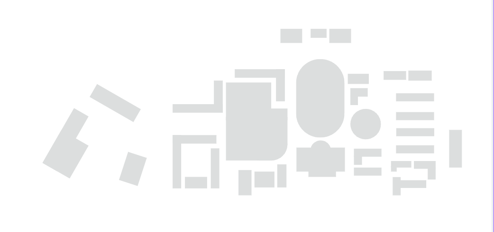

한동대 캠퍼스 지도
PC 환경: 지도 위 핀에 마우스를 올리면 툴팁이
나타납니다.
모바일 환경: 핀을 터치하면 화면 하단에 안내 카드가 쑥
올라옵니다.

김영길 그레이스 홀
• 소속 학부: 글로벌리더십학부
• 주요 시설: 도서관, 식당, 강당
• 새내기 팁: 시험기간에 가서 공부하시고, 비 올 때 또는
한여름에는 피하시고, 공부 열심히 한 뒤 그레이스 더 테이블
가세요!)
느헤미야
• 지진으로 벽 한 쪽 넘어감!
• 2층: 콘텐츠 디자인학부
• 3층: 생명과학부
• 4층: 커뮤니케이션학부
DLE
학교 행정 및 주요 사무실
• 학적, 등록금, 장학금 관련 업무
• 1~3층: 각종 행정실
현동홀
• 우리가 프입 수업 듣는 곳!
• 주로 상담심리 또는 AI융합학부
• 새내기 팁: 밤에 가지마세요! 무서워요!
평봉
• 잘 보시면, 월화목 곽초은이 뛰고 있어요!
• 이용 팁: 비 올 때 쓰지 마시고, 밤에 누워서 낭만을 즐기세요~
에벤에셀 홀
• 소속 학부: ICT학부
• 주요 시설: 1층 코이노니아, 2층 회의실, 3층 교순님 연구실
• 새내기 팁: 너무 시끄럽게 하지 마세요! 김의양 때문에 한 번 민원
들어왔어요!
• 조은양팀은 주로 여기서 작업했어요!
벧엘관(손양원RC)
• 조은양의 찬희와 아인이 살고 있어요!
• 중요 시설: 1층에 매점이 있어요!
• 새내기 팁: 공에 바람 빠졌을 때 거기서 넣으시면 됩니다!
(Cornerstone (CSH))
• 소속 학부: 공간시스템환경학부
• 1층: 예소드 / 2층: 강의실 / 3층: 연구실 / 4층: 설계실
• 새내기 팁: 계단 구조가 특이하니 미리 위치 파악 필수!
사용 방법
• 마우스를 핀 위에 올리면 자동으로 정보 카드가 나타납니다.
• 모바일에서는 핀을 한 번 탭하면 화면 하단에 정보가 표시됩니다.
• 정보 카드에는 건물명, 소속 학부, 층별 시설이 표시됩니다.
이동 정보
기숙사 → 학식
예상 소요시간: (2-3분)
기숙사 → 도서관
예상 소요시간: (5-7분)
기숙사 → 채플
예상 소요시간: (2-6분)
학부별 위치
| 학부 | 건물 | 층 | 주요 시설 |
|---|---|---|---|
| 공간시스템환경 (Spatial Design) | Cornerstone (CSH) | 2~4층 | 강의실, 연구실, 설계실 |
| 전산전자공학부 | 뉴턴홀 (Newton Hall) | 2~3층 | 대강의실, 실습실 |
| 생명과학부 | 느헤미야 (Nehemiah Hall) | 3층 | (대강의실, 실습실, 실험실) |
| 콘텐츠 디자인학부 | 느헤미아 (Nehemiah Hall) | 2층 | 대강의실, 실습실 |